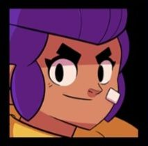

Nita est une enfant sauvage qui ne s'éloigne jamais de l'action ! L'ourson sur sa tête sert d'avertissement:tout mignon, mais avec des griffes et des crocs acérés.
ODD 15 - Nita représente la vie terrestre et la protection des écosystèmes. Elle vit en harmonie avec la nature et agit pour la préserver. Avec son lien unique à l'ours, elle montre l'importance de la biodiversité et du respect de toutes les formes de vie. Elle serait parfaitement à sa place dans un monde qui protège les forêts et les espèces sauvages.
Arme : Onde de choc
Nita projette une onde sismique en ligne droite, qui traverse les ennemis et inflige des dégâts à tous ceux qu'elle touche.
L'attaque est simple, mais efficace : elle frappe droit, fort, et sans fioritures.
Conseil : Essayez d'aligner plusieurs ennemis pour maximiser les dégâts avec un seul tir.
Attaque de base : Onde spirituelle
Son attaque principale est une vague d'énergie qui se déplace en ligne droite. Elle passe à travers les ennemis, ce qui permet à Nita de toucher plusieurs cibles en une seule frappe.
Parfait pour charger son super rapidement en frappant plusieurs adversaires.
Super (Ultime) : Invocation de l'ours
Nita fait apparaître un grand ours qui attaque automatiquement les ennemis à proximité. L'ours poursuit les cibles et peut encaisser beaucoup de dégâts.
Il agit comme un véritable partenaire de combat.
C'est une arme parfaite pour :
| Dégat Brut | Contrôle | Artillerie | Tir D'Elite | Tank |
|---|---|---|---|---|
|

Shelly |

Jessie |

Dynamike |

Brock |

Bull |

Nita |

Bo |
|||
|
Colt |